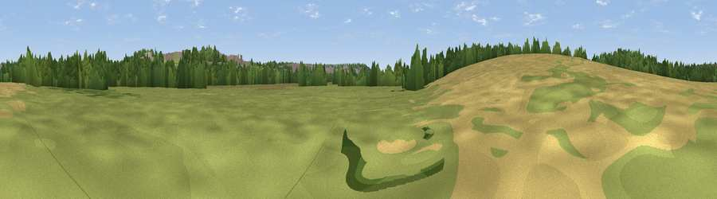

Viewpoint near Kings Worthy
#45707 in England · top 97% of its area beats it · near Kings Worthy · footpathWhere it is
The exact computed spot (SU 49012 31415). Click the marker for map links.
Public access: a public right of way passes within 6 m of this spot. Computed from Natural England's CRoW access layer and OpenStreetMap rights of way — not the legal definitive map. Always verify locally.
The view, rendered

A 360° render of this exact spot computed from the terrain model, tree cover and land cover — summer colours, afternoon light, calibrated against photographs of famous viewpoints. Real trees, hedges and buildings will differ in detail.
The panorama
Grey silhouette: terrain skyline in each direction (720 bearings, Earth curvature and refraction included). Dashed green: skyline with trees (+15 m) and buildings (+8 m) as obstacles. Blue strip: how far the ground is visible on each bearing.
Where the view opens
Wedge length = distance to the farthest visible ground on that bearing (vegetation-aware). Rings at 10, 25 and 50 km.
What fills the view
41% grassland · 29% woodland · 21% cropland · 9% built-up
Angular shares of the visible panorama (visual magnitude), not map area. Landscape diversity 0.55 (0–1 Shannon).
Key numbers
More beautiful places nearby
The staircase of upgrades: each row has a higher view potential than everything closer. Driving times are estimates from straight-line distance, calibrated against real road routing — check an actual route before setting out.
| Place | Direction | Drive | Score |
|---|---|---|---|
| Viewpoint near Easton | ESE · 1 km | ~3 min | 30.9 |
| Winnall Down | ESE · 2 km | ~6 min | 34.2 |
| Harley Hill | ESE · 3 km | ~8 min | 34.4 |
| Viewpoint near Chilcomb | SSE · 4 km | ~9 min | 48.4 |
| Deacon Hill | SSE · 4 km | ~10 min | 56.7 |
| Viewpoint near Chilcomb | SE · 5 km | ~10 min | 63.3 |
| Beacon Hill | SE · 14 km | ~26 min | 71.7 |
| Viewpoint near Meonstoke | SE · 19 km | ~32 min | 74.8 |
51.07997, -1.30172 · source: osm viewpoint · position refined by local search. Computed location — check access rights before visiting.